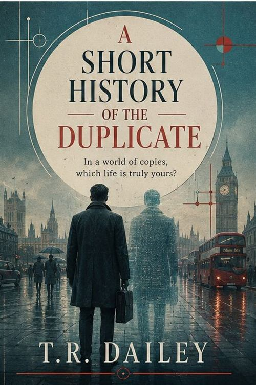

A Short History of the Duplicate
Standalone novel
In a world of copies, which life is truly yours?
In an alternate 1980s London, citizens can apply for a legal “Shadow” — a silent, synthetic double designed to absorb their grief, stress and public failures. Julian, a meticulous clerk in the Ministry of Records, has lived alongside his Shadow for twelve quiet years without incident.
But when his duplicate suddenly begins making subtle, unprompted decisions — attending art exhibits Julian never showed interest in, buying train tickets to places Julian has never been — Julian is forced to confront whether his double is malfunctioning, or whether it is finally expressing the life Julian was too afraid to live.
Where to find it
Retailer buttons are inactive placeholders on this demonstration site.
- Published
- September 2023
- Publisher
- Harrow & Pine
- Length
- 312 pages
- Formats
- Paperback, ebook, audiobook
- Recognition
- Shortlisted, The Ash Prize, 2024
An excerpt
Chapter One
The Shadow was in the kitchen when Julian came down, standing at the window in the grey light with its hands at its sides, the way it stood whenever it had nothing assigned to it.
“Morning,” Julian said, because twelve years is a long time to say nothing at all to something that lives in your house.
It did not answer. They do not answer. That is the entire point of them; the Ministry pamphlet says so on the second page, beneath a photograph of a woman weeping comfortably into a handkerchief while her double stands behind her, absorbing.
On the table, squared to the corner, was a ticket. Second class, Paddington to Aberystwyth, dated the ninth.
Julian had never been to Aberystwyth. Julian had never expressed, aloud or on any form, the slightest interest in Aberystwyth. He had filed his Preferences with the Ministry every January since 1974, and Wales appeared nowhere on any of them.
He picked the ticket up and held it to the window. Ordinary card. Ordinary ink. Purchased with money from an account only he could touch.
Behind him, quite distinctly, his Shadow shifted its weight.
Praise
What they said
-
“A speculative premise handled with the manners of a domestic novel. Dailey never once raises her voice, and the effect is unbearable.”
Marginalia -
“The rare science-fiction novel where the technology is entirely beside the point. What haunts you afterwards is the filing.”
The Bellwether
These review quotations are fictional and were written for this demonstration site. They are not attributed to any real publication.